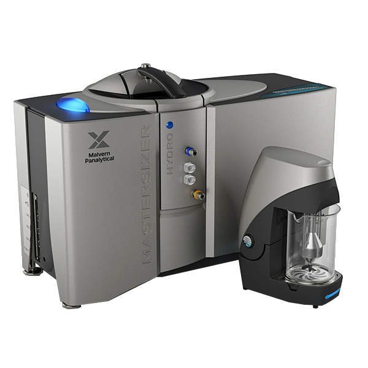

Analizador Granulométrico Malvern Mastersizer 3000

| Analizador Granulométrico Malvern Mastersizer 3000 | |
|---|---|
| Localização: | Lab. 1.78 Edf. 7 |
| Responsável: | Margarida Ramires |
| Operador: | Margarida Ramires |
| Princípio Analítico | Granulometria por Difração de Laser |
| Fabricante: | Malvern Panalytical |
| Modelo: | Mastersizer 3000 |
| Tipo: | Analizador Granulométrico |
| Website: | Malvern Panalytical |
Malvern Mastersizer 3000, sistema de análise do tamanho de partículas por difração laser, equipado com a unidade de dispersão húmida Hydro EV. O equipamento permite determinar a distribuição granulométrica de partículas suspensas em meio líquido, sendo adequado para a caracterização de sedimentos, solos, microalgas, biomassa, partículas ambientais e outros materiais particulados.
A análise permite determinar a distribuição do tamanho das partículas numa ampla gama dimensional, fornecendo parâmetros granulométricos como D10, D50 e D90. A unidade Hydro EV permite a dispersão e circulação controlada da amostra durante a análise, facilitando a obtenção de suspensões homogéneas e reprodutíveis e reduzindo a influência da aglomeração das partículas.
O sistema é particularmente adequado para estudos de granulometria, caracterização de sedimentos e partículas ambientais, análise de biomassa e microalgas, bem como para avaliar alterações na distribuição do tamanho das partículas resultantes de diferentes tratamentos ou processos.
Calendário / Disponibilidade
RequisitarTécnicas Implementadas:
| Técnica | Método |
|---|
Não aplicável
Possíveis Técnicas Futuras:
Não Aplicável
Principais Aplicações:
- Análise granulométrica de sedimentos e solos;
- Caracterização de partículas em amostras ambientais;
- Determinação do tamanho de microalgas e biomassa particulada;
- Caracterização de pós e materiais particulados;
- Análise de suspensões e emulsões;
- Avaliação de processos de moagem, dispersão ou aglomeração;
- Determinação de D10, D50, D90 e distribuição granulométrica;
- Comparação da distribuição de partículas antes e depois de tratamentos ou processos
Tipos de Amostra:
- Suspensões;
- Emulsões;
- Pós;
Principais Vantagens:
- Ampla gama de medição do tamanho de partículas por difração laser;
- Análise rápida e reprodutível da distribuição granulométrica;
- Elevada resolução e sensibilidade na caracterização de partículas;
- Dispersão húmida controlada através da unidade Hydro EV;
- Controlo da agitação, recirculação e dispersão ultrassónica da amostra;
- Compatibilidade com diferentes volumes e tipos de dispersantes;
- Possibilidade de análise de uma vasta gama de materiais particulados;
- Determinação de parâmetros granulométricos como D10, D50 e D90;
- Adequado para caracterização de sedimentos, solos, microalgas, biomassa e partículas ambientais;
- Software especializado para aquisição, processamento e interpretação da distribuição granulométrica;
Específicações Técnicas:
| Específicação | Valor |
|---|---|
| Fabricante | Malvern Panalytical |
| Modelo | Mastersizer 3000 |
| Software | Malvern Panalytical |
| Princípio da Análise | Espalhamento Mie e Fraunhofer |
| Faixa de Tamanho de Partículas | 0,01–3500 µm (10 nm–3,5 mm) |
| Fonte de Luz Vermelha | Laser He-Ne, máx. 4 mW, 632,8 nm |
| Fonte de Luz Azul | LED, nominalmente 10 mW, 470 nm |
| Configuração Ótica | Reverse Fourier (feixe convergente) |
| Exatidão | ±0,6% |
| Classe do Laser | Classe 1 |
| Unidade de Dispersão | Hydro EV |
| Hydro EV - Tipo | Unidade de dispersão húmida por imersão |
| Hydro EV - Velocidade da Bomba | 0-3500 rpm |
| Hydro EV - Caudal Máximo | 1,7 L/min |
| Hydro EV - Tamanho Máximo de Partícula | 2100 µm |
| Hydro EV - Volume Máximo | 1000 mL |